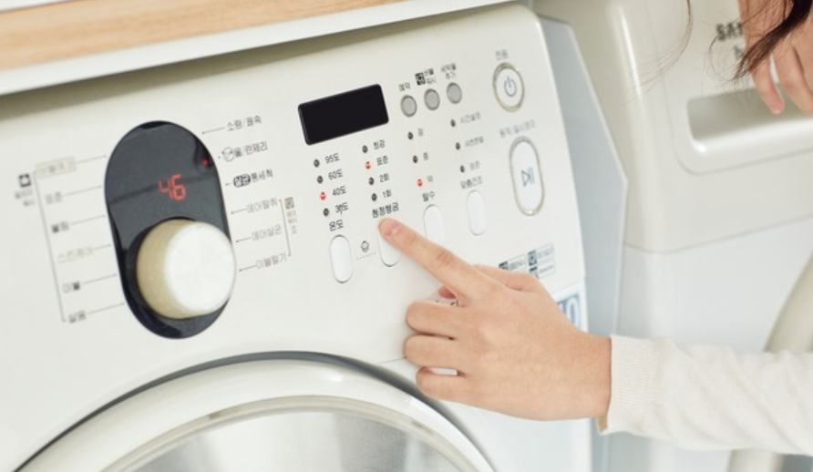
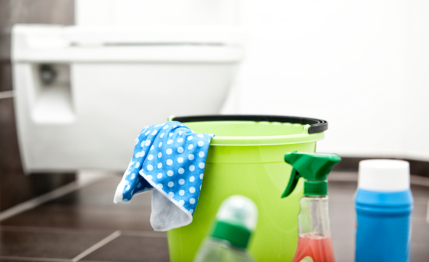
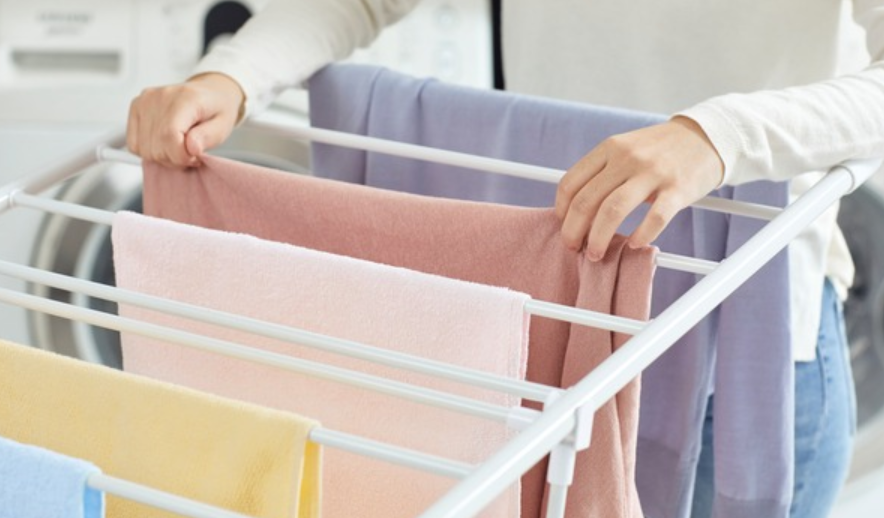
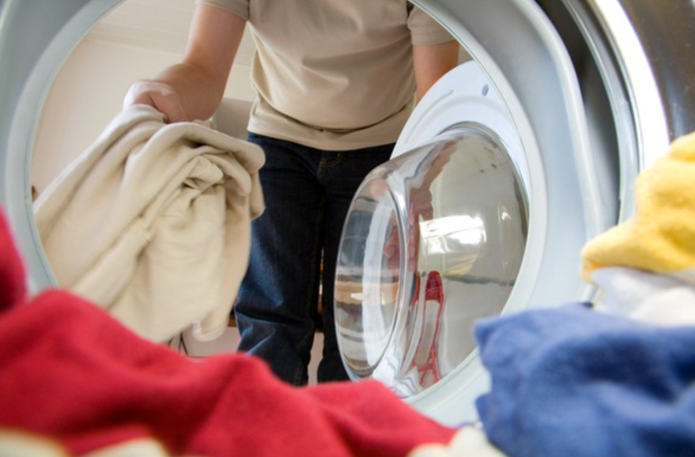
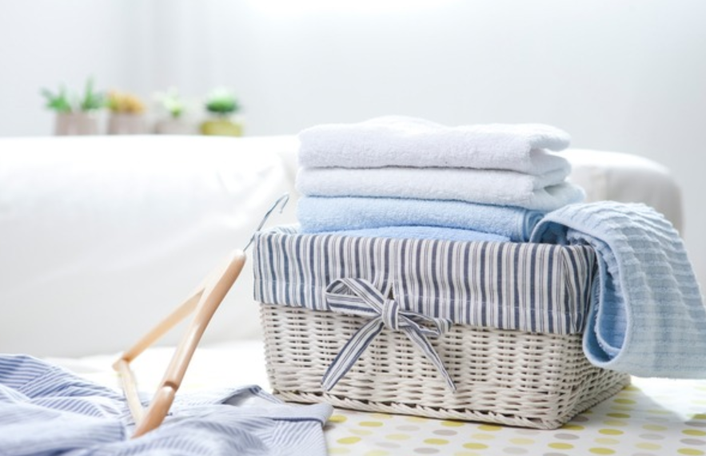

🏠 세탁세제 유통기한 버리는 방법 아시나요?
용인 변기막힘 전문 시공 후기

📋 작업 개요
- 위치: 용인
- 서비스 유형: 변기막힘, 하수구막힘, 배관청소
- 작업 일시: 2023. 3. 13. 12:30
- 업체명: 하수구수사대 (010-5615-2118)
🔍 문제 상황
반갑습니다. 하수구수사대입니다.
세탁세제는 하루가 멀다 하고 사용할 수밖에 없는 생활용품 중 하나입니다. 그러나 올바른 세탁세제 유통기한 얼마나 되는지 대다수 분들이 잘 알지 못한 채 사용을 하는 경우가 많습니다.
음식이 아니기 때문에 거의 매일 사용을 하면서도 유통기한을 챙기지 못하거나 가볍게 생각하는 분들이 상당할 것으로 생각됩니다. 직접적으로 우리 피부에 닿는 세제이기에 정확한 세제의 유통기한에 대해서 잘 알고 사용하는 자세가 필요하기에 하수구수사대에서 오늘 이 시간에 자세히 알려드리도록 하겠습니다.
자체적인 향을 가지고 있고 음식류처럼 직접적인 섭취를 하는 것이 아니기 때문에 세탁세제가 변질이 된 것인지 판단 여부 자체가 상당히 까다로운 조건을 가지고 있습니다. 세탁세제 외부에 생산연도와 생산월을 많이 기재해둔 것을 확인할 수 있으나 세제는 상하지 않을 것이라는 안일한 생각으로 한꺼번에 많은 양을 구매한 뒤 쌓아두고 사용하는 분들이 대다수 일 거라고 생각됩니다.

🔎 원인 분석
💡 전문가 진단: 액체보다 가루 제품이 더욱 오래 사용이 가능하다고 합니다.
일반적인 평균 세탁세제 유통기한은 3년을 기준으로 사용하며, 사용 기한 3년이 경과한 제품이라도 사용은 가능한 상태입니다. 만약 미개봉 상품의 경우라면 사용기간이 더 길어질 수 있으며 개봉한 제품의 경우에는 개봉 날짜 기준 6개월과 1년 사이에 전체를 사용하는 것이 가장 안전합니다.
액체보다 가루 제품이 더욱 오래 사용이 가능하다고 합니다.
가루 제품보다는 물과 잘 섞이고 이물감이 남지 않아 액체 세제를 주로 사용하는 분들이 많을 거라 생각됩니다. 수분이 많은 액체 세제는 훨씬 더 빠른 성분 분해가 진행되기에 가루세제보다 액체 형태의 세제의 변질이 더 빠르게 발생하기에 최대한 기한 내 사용하는 것이 가장 좋은 방법입니다.
가루세제 제품이라고 할지라도 개봉일 기준 1년 이내로 사용하는 것을 추천해 드리며 시간이 경과됨에 따라 성분 분해가 시작되는 가루세제 역시 효과가 점차 줄어들 수 있기에 기한 내 사용하는 것이 적합할 수 있습니다.

🔧 작업 과정
세제 버리는 방법 아시나요?
만약 세탁세제 유통기한이 경과된 제품이라 사용이 꺼려지는 경우라면 변기나 하수구에 버리는 것은 불가하며 종량제 쓰레기봉투에 담아서 제대로 배출을 하는 것이 올바른 방법입니다. 하수구에 대량으로 배출하는 것은 수질 오염의 주된 원인이 된다고 하니 자제하는 것이 바람직합니다.
세제들은 청소할 때 소량씩 사용한 후 통을 깨끗이 씻어서 버리거나 신문지나 휴지와 함께 종량제 봉투에 바로 버리시는 것이 환경을 위해서도 바람직한 태도라고 할 수 있습니다.
오늘은 세제의 유통기한에 대한 올바른 확인 법에 대해 알아보았습니다.
만약 유통기한이 경과한 샴푸나 세제를 사용하여 빨래를 진행한다면 세탁기의 헹굼 기능을 추가로 2-3회 더 진행하여 옷감에 잔여 이물감이 남지 않도록 깨끗하게 씻어 내는 것이 좋습니다.
세제는 지속적으로 피부에 직접 닿는 옷을 관리하는 만큼 꼼꼼히 관리하여 피부를 보호하시는 것이 좋겠습니다. 섬유 유연제 역시 세탁세제 유통기한과 마찬가지로 1년 정도의 기간이 지나게 되면 성분이 분해되어 효과가 감소되고 향도 연해지는 현상이 나타날 수 있습니다.
그렇기에 한 번에 대량으로 구매해서 쌓아두고 사용하시는 것보다는 필요한 만큼 적정 용량을 구매하여 사용하시고 재구매하는 형태로 사용하는 것을 추천해 드립니다. 오늘은 하수구수사대에서 세탁세제 유통기한에 대해 자세히 알려드렸습니다.


✅ 작업 완료
우리가 흔히 쉽게 사용하여 놓쳐버리더나 제대로 알지 못했던 세탁세제 사용법에 대해
정확히 알고 소중한 피부를 보호하는 데 도움이 되는 정보가 되셨기를 바라겠습니다.



⚠️ 하수구 배관 막힘 예방 및 관리 가이드
- ✅ 머리카락, 비닐, 물티슈 등 물에 분해되지 않는 이물질은 하수구 유입을 절대 금지해 주세요.
- ✅ 하수구 거름망을 씌우고 모여진 이물질은 주기적으로 쓰레기통에 바로 비워주셔야 합니다.
- ✅ 배관 노후가 심할 경우 이물질이 더 쉽게 걸리므로 주기적인 배관 세척(고압세척 등)을 권장합니다.
- ✅ 작업 후 1년 이내 재발 시 하수구수사대에서 무상 A/S 보증 서비스를 제공합니다.
💡 핵심 정리
- 확실한 장비 작업(내시경 점검 및 샤프트 스케일링)으로 원인을 뿌리 뽑습니다.
- 작업 후 1년 이내에 동일한 부위 재발 시 100% 무상 A/S 서비스를 보장합니다.
- 서울 · 경기 · 인천 전 지역에 24시간 언제든 긴급 출동할 수 있도록 항시 대기 중입니다.
❓ 자주 묻는 질문 (FAQ)
🚨 용인 변기막힘 문제로 고민이신가요?
정확한 원인 진단과 확실한 시공으로 재발 없는 해결을 약속드립니다.
24시간 긴급 출동 | 서울 · 경기 · 인천 전지역 | 1년 내 재발 시 무상 A/S